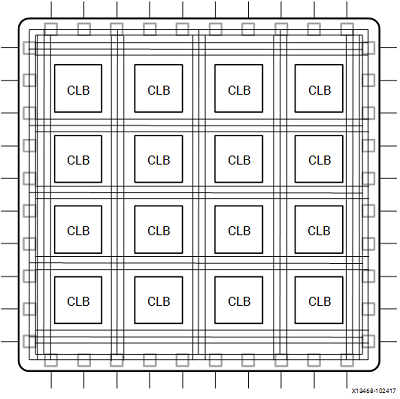

January 4, 2023
Our mission is to answer the following open question:
Describe how FPGAs are buildable using transistors, and that ICs are just
collections of transistors in a nice reliable package. Understand the LUTs
and stuff. Talk briefly about the theory of transistors, but all projects
must build on each other so we can’t build a transistor.
From the question alone there's a lot to unpack. My plan is to break that problem down by answering the following questions:
Transistors are semiconductor devices that can amplify or switch electrical signals and power.
In electronic circuits, transistors are frequently used as switches. For low power applications, they can be used to generate logic gates (AND, OR, XOR, etc).
The endgame is to be a perfect short-circuit when the switch is on, and a perfect open circuit when off. The transition between states should be as close to instantaneous as possible.
The circuit above is called a grounded-emitter transistor circuit. As the voltage in the input signal rises, the emitter and collector currents rise exponentially.
The voltage in the collector drops because of the reduced resistance between the collector and the emitter. If the emitter is ground, then the voltage on the collector is the ground voltage, and therefore the transistor is acting as a short-circuit. We also say that the transistor is saturated because current is moving freely from the collector to the emitter.
FPGA stands for field-programmable gate array. These devices can be configurable by a customer after manufacturing (hence field-programmable).
The configuration of a FPGA is specified via a hardware description language (HDL). By using HDL, engineers can program their own hardware rather than having to run software in a predefined processor. The "code" for the FPGA program is stored in a configurable flash memory that gets loaded into the FPGA every time it gets energised.

The basic architecture of FPGAs is composed of many Configurable Logic Blocks (CLB)
In each configurable logic block we have Look Up Tables (LUT) and Flip-flops.
The LUTs are essentially truth tables. They collect the inputs (a typical number of inputs is 6), and based on the truth tables they output a result. Keep in mind that LUTs can be used as both a logic engine or a data storage unit.
The flip-flops are register elements that store the result of a LUT.
As each CLB can be programmed to be independent from each other, FPGAs can achieve true parallelism.
As we've seen from the above, CLBs are the building blocks of FPGAs. As CLBs are composed of LUT and Flip-flops, which are in turn composed by transistors, FPGAs are built by transistors.
When you buy an Integrated Circuit (IC) online, you can go to the vendor's website and check its schematic. It will usually be represented as a combination of transistors, diodes, resistances, capacitors and so on. All of these components are enveloped in an encapsulated silicon chip.
In terms of reliability, ICs are considered reliable because: 1. No soldering joints. Meaning the connections are more reliable. 2. All components are embedded in a single silicon chip, and finally encapsulated. This means that components are less likely to be corrupted by corrosion, vibration, etc. 3. The IC will be manufactured in a controlled automated factory, giving less room for human errors. 4. The layout is compact, reducing costs through power, and enhancing performance.
Here is a great article from evilmadscientist.com show casing how an IC looks like in real life once its silicon envelope is opened.